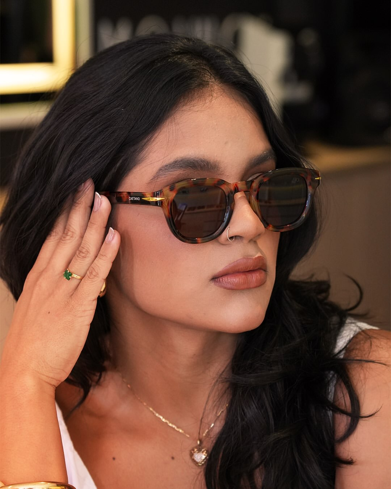

Óculos de grau & sol
Seu olhar,
sua assinatura.
Do acetato marcante ao metal delicado. Explore armações que dão outro contorno ao seu olhar.
Explorar o lookbook01 / Lookbook
Em foco.
Role para girar cada armação e ver de perto as lentes, os aros e as hastes.
Seleção ilustrativa · 04 modelos
Pela lente.
Role a página para encaixar a armação.
Sem óculosO que faz uma armação ser sua?
- 01
Formato
Compare a presença de uma frente quadrada com a suavidade dos aros redondos.
- 02
Material
Observe a cor em camadas do acetato e o traço mais fino dos aros de metal.
- 03
Encaixe
Ao experimentar, confira se a ponte se apoia bem no nariz e se as hastes assentam sem apertar.
O que dizem nossos clientes.
82 avaliações · Consulta em
“Eu gosto muito da qualidade dos itens…”
“…o pós compra tem um ótimo acompanhamento.”
“A promoção da Caetano em dobro vale a pena aproveitar!”